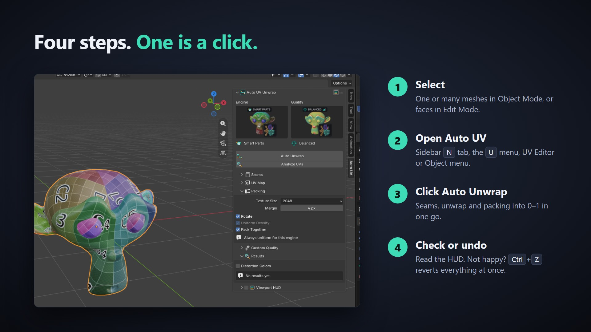
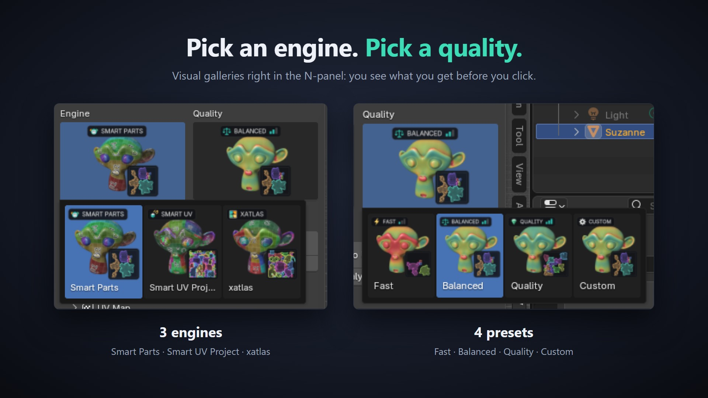

Auto UV Unwrap is a Blender extension. You get one .zip that works on every supported platform. Do not unzip it.
.zip file onto the Blender window, or go to Edit › Preferences › Get Extensions, open the ▾ menu in the top right and choose Install from Disk…Install the new .zip the same way. Blender replaces the old version. Restart Blender if the panel does not refresh.
Seams are written to the mesh, the UVs are unwrapped and packed into 0–1, and the Results panel, the status bar and the HUD show the numbers. Not happy? Press Ctrl+Z once: UVs, seams, selection and mode all go back to how they were.

| Place | What is there |
|---|---|
| 3D Viewport › Sidebar › Auto UV | The full panel: engine, quality, Auto Unwrap, Analyze UVs, all settings, Results and the HUD switch. |
| Edit Mode › U menu | Auto UV Unwrap entry at the bottom of the UV menu. |
| UV Editor › UV menu | Auto UV Unwrap entry. |
| UV Editor › Sidebar › Auto UV | Engine, quality, the two buttons, Results and a toggle for Blender's stretch overlay. |
| 3D Viewport › Object menu | Auto UV Unwrap entry for Object Mode. |
The menu entries use the settings from the sidebar panel.
Pick the engine from the picture gallery at the top of the panel.
| Engine | How it works | Use it when |
|---|---|---|
| Smart Parts (default) | Finds the parts of the model from its shape (sharp and concave edges, topology), flattens each part, measures the distortion and splits again only where a chart is above the target. Small charts are merged back when the stretch allows. | Almost always. Fewest islands and low stretch. |
| xatlas | Chart segmentation from the bundled xatlas library, then flattened with Blender's own solver and packed. | Hard-surface and CAD-like meshes, or as a second opinion. Often the lowest distortion with more islands. |
| Smart UV Project | Blender's built-in Smart UV Project, run with the add-on's packing and margin. | As a quick baseline to compare against. |

| Setting | Fast | Balanced | Quality |
|---|---|---|---|
| Distortion threshold | 0.25 | 0.12 | 0.06 |
| Max split rounds | 2 | 4 | 6 |
| Unwrap method | Angle Based | Minimum Stretch | Minimum Stretch |
| Merge small charts | Off | On | On |
| Pack shape | Bounding Box | Exact Shape | Exact Shape |
Custom unlocks the Custom Quality sub-panel so you can set every value yourself (see below).
Measured with Balanced and Smart Parts: a 7.9k-face Suzanne unwraps in about 1.4 s, a 10.2k-face UV sphere in about 2.0 s.
| Setting | Default | What it does |
|---|---|---|
| Existing Seams | Keep My Seams | Keep My Seams: seams you marked yourself are always kept; seams from a previous Auto UV run are replaced. Replace All: clears every seam of the processed faces first. |
| Sharp Angle | 60° | Edges sharper than this always become seams. Set 180° to turn it off. |
| Setting | Default | What it does |
|---|---|---|
| UV Map | Active UV Map | Active UV Map writes into the active map (one is created if the mesh has none). Named UV Map writes into the map named below. |
| Name | AutoUV | Name of the UV map to write into. Created if missing. Only used with Named UV Map. |
| Setting | Default | What it does |
|---|---|---|
| Texture Size | 2048 | Texture resolution (256 to 8192) used to turn the pixel margin into UV space. |
| Margin | 4 px | Space between islands in pixels at that texture size (0–64). |
| Rotate | On | Rotate islands for a tighter pack. |
| Uniform Density | On | Scale islands to the same texel density before packing. Only changes Smart UV Project; Smart Parts and xatlas always keep every chart at its true 3D size. |
| Pack Together | On | Pack all selected objects into one shared UV space. Off: each object fills 0–1 on its own. |
| Setting | Default | What it does |
|---|---|---|
| Distortion Threshold | 0.12 | Charts with more distortion than this are split again. Lower = less stretch, more islands. |
| Max Split Rounds | 4 | How many times a chart may be split (0–10). |
| Unwrap Method | Minimum Stretch | Angle Based (ABF), Conformal (LSCM) or Minimum Stretch (SLIM; falls back to Angle Based where SLIM is not available). |
| Pack Shape | Exact Shape | Bounding Box (fastest), Convex Hull, or Exact Shape (tightest). |
| Merge Small Charts | On | Merge small charts back into their neighbours when the distortion allows it. |
After every Auto Unwrap or Analyze UVs the Results panel lists the operation and engine, islands, seams, flipped faces, average and max distortion against the target, and the time. The same summary appears in Blender's status bar. Distortion Colors in this panel makes Analyze UVs also paint a heatmap (see next section).
Analyze UVs measures the active UV map of the selected meshes without changing it. It works on any UVs: hand-made, from another tool, or from Auto UV.
AutoUV_Distortion and switches the viewport color to Attribute so you see a heatmap on the mesh (blue = low stretch, red = high stretch).
The HUD is a small card drawn in the 3D Viewport with the latest result: engine, islands, seams, flipped faces, time, a distortion bar against your target and a mini UV layout preview.
The distortion bar turns from green to amber to red as the value goes from 0 to twice your target.

| Value | Meaning |
|---|---|
| Islands | Number of separate UV pieces. Fewer usually means fewer visible seams in your texture. |
| Seams | Number of seam edges on the mesh. |
| Distortion | How much the UVs stretch the surface, per face, weighted by area. 0 is perfect. Below the target (0.12 on Balanced) a checker texture looks even; above about 0.25 stretching becomes visible. |
| Avg / Max | Average over the whole mesh and the worst chart. |
| Flipped | Faces that are mirrored in UV space. Should be 0. |
| Time | Wall-clock time of the whole operation. |
Select at least one mesh object in Object Mode, or enter Edit Mode on a mesh. Curves, text and other object types are not supported; convert them to mesh first.
The bundled xatlas wheel could not load on this system. Reinstall the extension from the .zip. Smart Parts and Smart UV Project keep working without it.
The status bar shows a "Skipped …" warning with the reason. Other selected objects are still processed. Possible reasons:
Existing Seams is set to Replace All, or the engine is Smart UV Project, which ignores seams. Press Ctrl+Z, set Keep My Seams and use Smart Parts or xatlas.
Pack Shape is set to Convex Hull. Switch to Exact Shape or Bounding Box (Custom Quality), or use a preset.
Turn on the HUD button in the panel header, then run Auto Unwrap or Analyze UVs once. Check the corner setting in the add-on preferences, and make sure viewport overlays are visible.
No. Everything runs offline on the CPU inside Blender. There is no AI model, no account and no network access.
| Item | Supported |
|---|---|
| Blender | 4.2 and newer, tested on 4.5 LTS and 5.2 |
| Windows | x64 |
| macOS | Apple Silicon (arm64) and Intel (x64) |
| Linux | x64 |
| Dependencies | None to install. xatlas is bundled inside the extension. |
| Network | Not used |